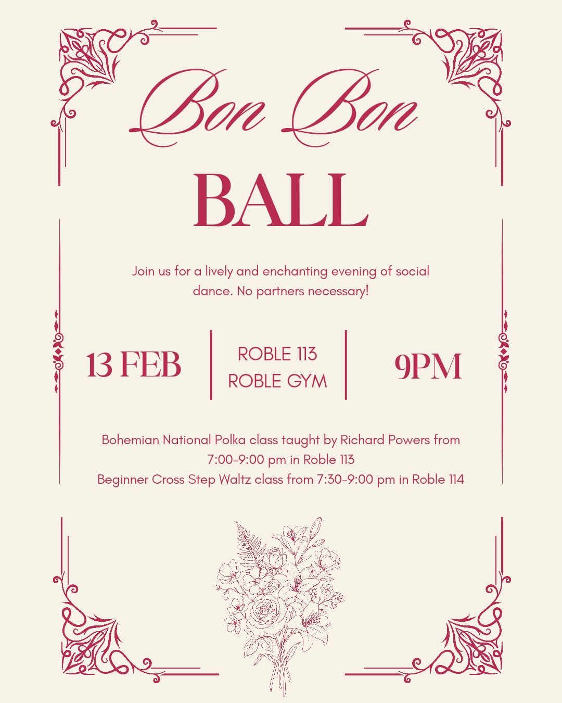

Bon Bon Ball
The Bon Bon Ball will kick off the Austria Fortnight on February 13th, 2026!
What is the Bon Bon Ball?
The Bon Bon Ball is a social dance celebration that kicks off two weeks of Austria Fortnight lessons leading up to the Stanford Viennese Ball. It will take place in Roble Gym (375 Santa Teresa Street, Stanford, CA, 94305) Room 113 from 9:00 pm to 11:45 pm.
What is the dress code for the Bon Bon Ball?
As with all social dance events, attendees can wear anything that they feel comfortable in. Only dance shoes will be allowed on the floors of Roble Gym 113. Many dancers remove their street shoes and dance in their socks!
Can I learn the Bohemian National Polka at the Bon Bon Ball?
Yes, Prof. Richard Powers will be teaching the Bohemian National Polka from 7:00 pm to 9:00 pm at Roble Gym Room 113 before the Bon Bon Ball. Prof. Richard Powers requires attendees of the class to have knowledge of basic waltz and polka. A note from Prof. Richard Powers for those interested in the class:
“Bohemian National Polka is fun to dance, once one knows it, but it is a very difficult advanced dance, only for those who already know how to do a rotary waltz or polka. It is a five-part choreography, where each part builds upon the previous steps. Therefore, if you want to take the class, be there at the beginning, at 7pm.
Part 2 teaches a difficult combination of polkas and pivots. Then Parts 3 and 4 use the technique which was learned in Part 2. Therefore, if you are running late on Friday night, arriving as late as 7:30pm might still work, if one is a very quick learner, but no one will be allowed to join the class after 7:40pm, unless they already know Bohemian National Polka very well, and wish to assist those learning it for the first time. But arriving late after missing 30 minutes will still be too difficult for most people, so the first advice is best: be there at the beginning of the class, at 7pm, ready for a fun challenge!”